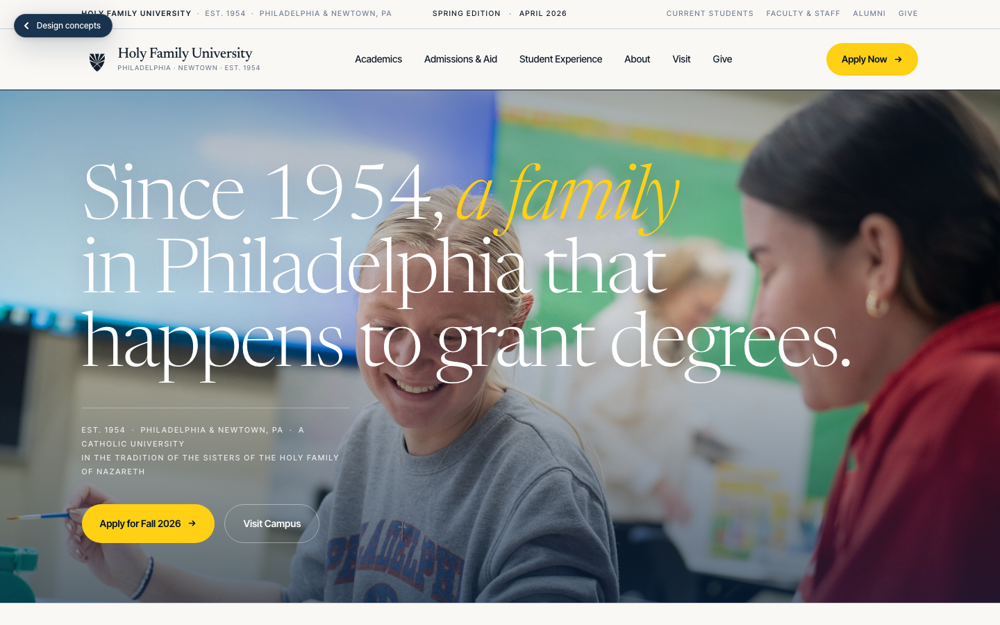
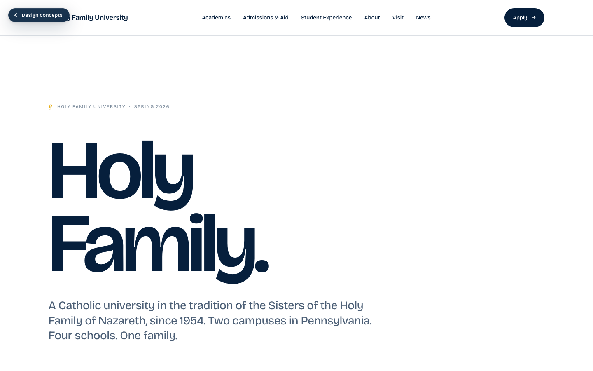
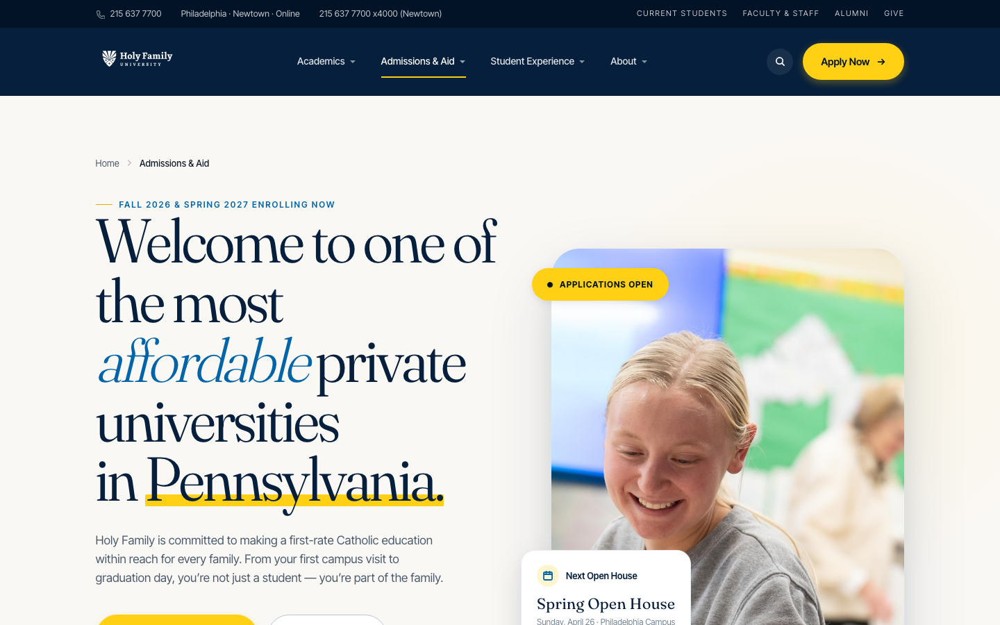
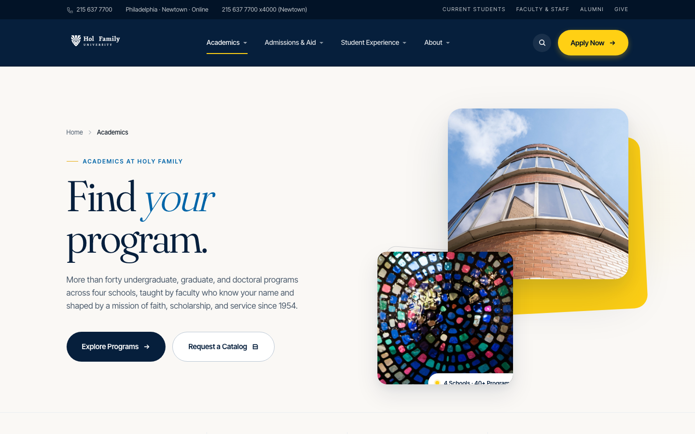
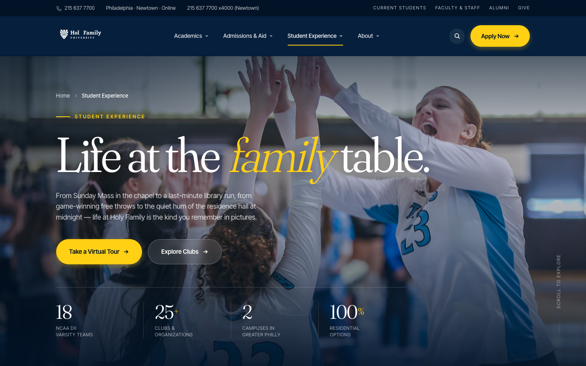
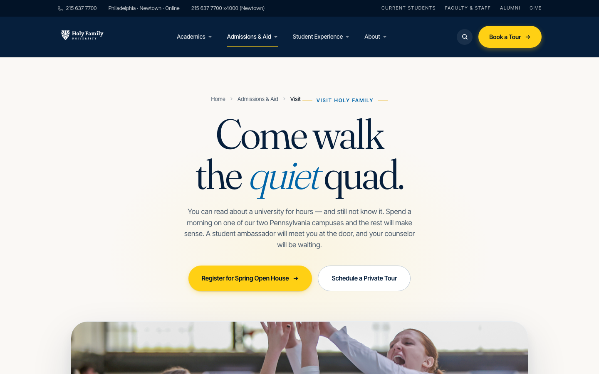
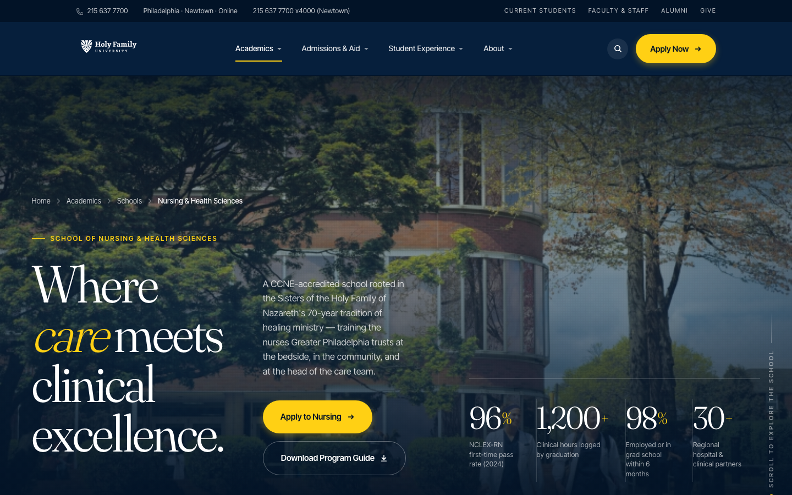
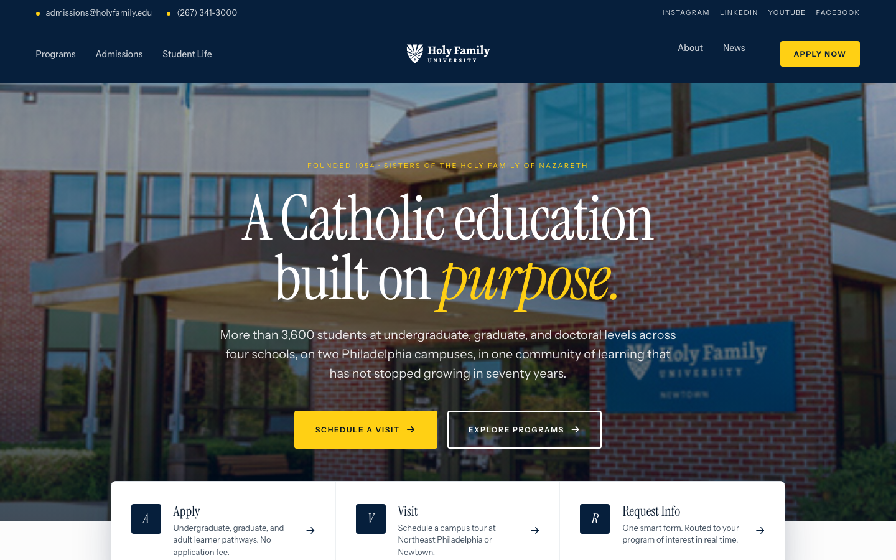
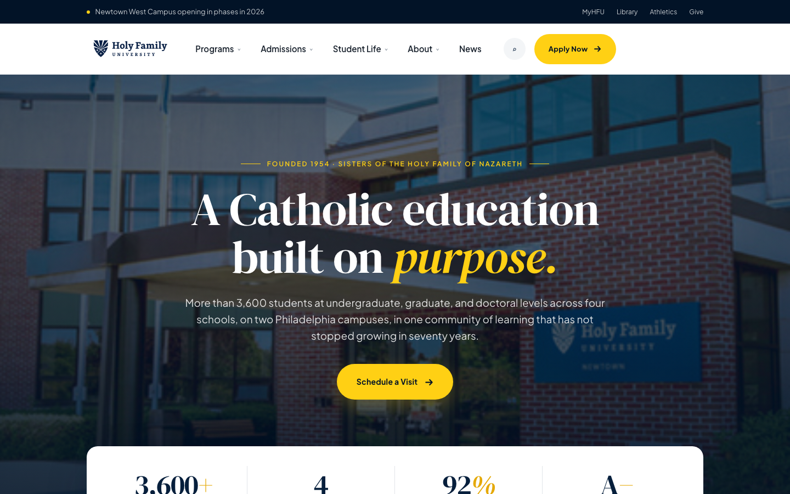

Nine pages. One cohesive
HFU brand system.
Each concept below is a fully interactive, production-quality mockup of a real Holy Family page. They share one brand palette (HFU navy, blue, yellow, warm cream) and one real photo library sourced from holyfamily.edu, but every page uses a different typographic system, a different hero rhythm, and a different signature move so the client can see the full range of the brand without losing cohesion. Every page carries the Design Concepts floating chip so you can click back to this hub from anywhere.
Homepages — the new flagships

A Sunday paper from a town that loves you. Newsreader serif + Inter Tight, newspaper masthead bar, three editorial pull-quotes down the page, a five-column CSFN values grid with the teneor votis motto, and a signed letter from President Anne M. Prisco as the final CTA. Real headlines from the holyfamily.edu press section.

A Pentagram-style single-typeface tour-de-force in Bricolage Grotesque. Type-only hero, no photo in the first fold, a kinetic "1954" typographic landmark at full viewport scale, infinite-scroll stats ledger, section labels as § annotations, and the nine CSFN/HFU values as a single chip row. Confident modernism, warm Catholic voice.
Core pages — the working system

A Carevia-inspired editorial admissions flow with a split hero, path picker tabs for First-Year / Transfer / Graduate / International, a horizontal five-stop journey, events grid with featured tile, and a warm-navy student voices section. The conversion page the client will judge hardest — so we went hardest here.

Asymmetric photo collage hero with a rotated yellow accent shape, a 2×2 alternating navy/white schools grid, and a sticky-sidebar filterable explorer spanning twelve real HFU programs from BSN to EdD.

The photo-forward page in the set. Cinematic full-bleed volleyball hero, editorial bento masonry gallery telling one Tuesday dawn-to-dusk, a dark athletics split panel, and a warm cream student-voices section that deliberately breaks the admissions navy pattern.

Centered editorial hero over a framed 21:9 campus photo with a glass-morphism caption strip. Yellow-bar signature event banner for Spring Open House, a 2×4 visit-type grid, a stylized dark navy campus map with pulsing yellow pins, and a vertical timed day-in-the-life itinerary.

The only dark-theme concept in the set — an Edway-inspired full-bleed navy hero, a faculty carousel with prev/next arrows paired with four switching content tabs, a 2×2 alternating feature grid, and a dean contact form laid over a nursing photo backdrop. Shows the brand can go dark.
Homepage concepts — earlier studies

The first homepage study — Instrument Serif + Instrument Sans, a literary editorial rhythm, and a calmer navy-first palette. The hero leans into Holy Family's 1954 founding story and the Sisters of the Holy Family of Nazareth legacy.

The second homepage study — DM Serif Display + Plus Jakarta Sans, a more corporate-contemporary feel borrowed from the Maxion Home Three template, with tighter cards and bolder shadows. Shows what happens when the brand shifts toward "confident modernist."
Browse the vocabulary these pages are built from.
The Component Library page breaks the HFU design system down into twenty reusable sections — accordions, tables, tabs, CTAs, media features, forms, pricing, stats, timelines, and the rest of the kit. It's the same atomic vocabulary wearing every mockup above.